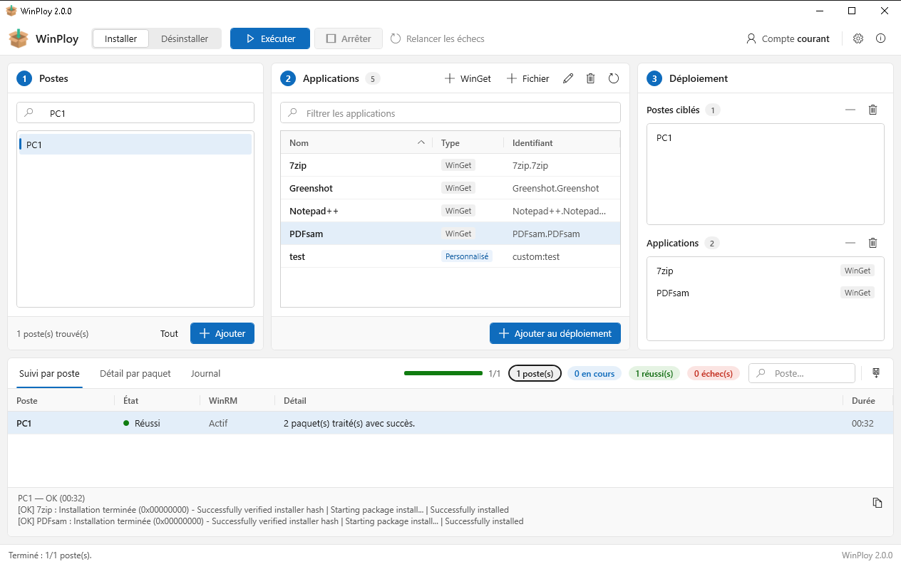
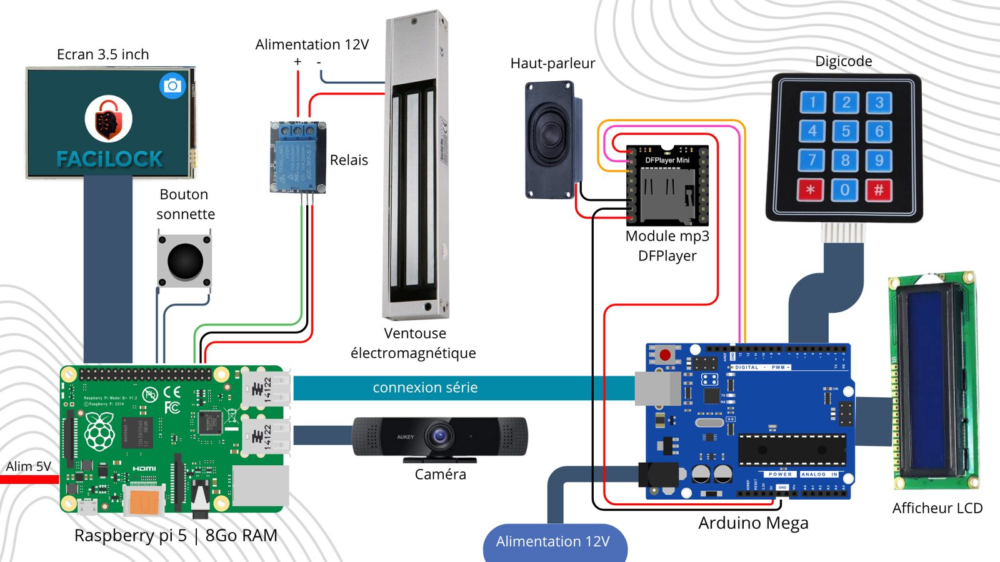

Projets
Ce que j'ai construit
Des services en production, un outil que j'ai écrit, et les travaux pratiques du BTS qui m'ont le plus appris.
Réalisations
Chaque projet a sa page : contexte, fonctionnement, difficultés.
Sauvegarde automatique des switchs
En serviceChaque nuit, Ansible récupère la configuration de 43 switchs Aruba et Cisco répartis sur 3 sites et la versionne dans Git. Piloté depuis Semaphore.
Ansible · Semaphore · Docker · GiteaServeur Docker piloté par Git
En serviceTous les conteneurs décrits dans un seul fichier Compose versionné dans Gitea. À chaque modification, Portainer redéploie.
Docker · Portainer · GiteaPrise en main à distance avec RustDesk
En serviceServeur RustDesk auto-hébergé, client installé et configuré par GPO sur les postes, outil d'installation ponctuelle à distance.
RustDesk · Docker · GPO · PowerShell
WinPloy
Version 2.0Logiciel Windows pour installer une application sur un lot de postes du domaine, en parallèle, sans agent.
C# · .NET 8 · WPF · PowerShell
FaciLock
Bac Pro · 2025Serrure connectée à reconnaissance faciale : Raspberry Pi 5, digicode sur Arduino et application mobile pour ouvrir à distance et voir les visiteurs inconnus.
Python · Flask · OpenCV · Arduino · React NativeTravaux du BTS
Réalisés en cours. Chaque ligne ouvre le rapport en PDF.
-
BTS 2
Audit Active Directory et GPO
Audit d'un domaine de test avec PingCastle et BloodHound : politique de mots de passe sans verrouillage, protocoles d'authentification anciens corrigés. Puis trois GPO de restriction des postes, vérifiées sur un client.
AD · GPO · PingCastle · BloodHound -
BTS 2
Mise en service sécurisée d'un poste Windows
Procédure en trois variantes selon le modèle de tiers (T0, T1, T2), à partir d'un état initial relevé sur un banc de test : comptes, pare-feu, audit, ports exposés.
Windows Server · PowerShell -
BTS 2
Durcir une machine Linux, et le prouver
Debian 13 durcie mesure par mesure (comptes, SSH, fail2ban, nftables, auditd, AppArmor), avec pour chacune la commande qui prouve qu'elle est appliquée. Score Lynis de départ : 66.
Debian · Bash · Lynis -
BTS 2
Audit technique d'un poste Linux
Douze points de contrôle (comptes UID 0, sudo, mots de passe, ports, services), puis un script qui génère le rapport.
Fedora · Bash -
BTS 2
Analyse d'un incident dans une PME
Étude de cas : hameçonnage, macro, accès VPN puis compromission du domaine. Actifs critiques, chaîne d'attaque, mesures immédiates et préventives.
Gestion d'incident